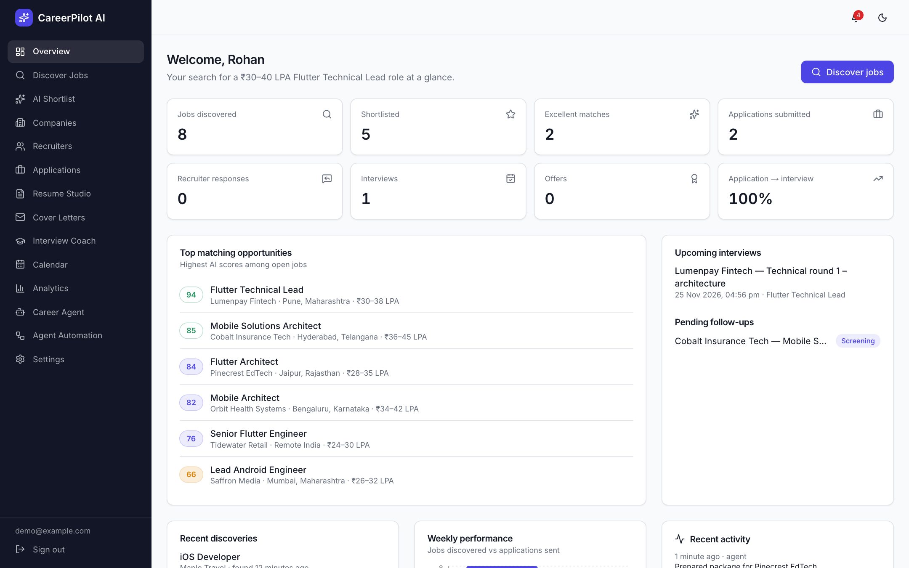
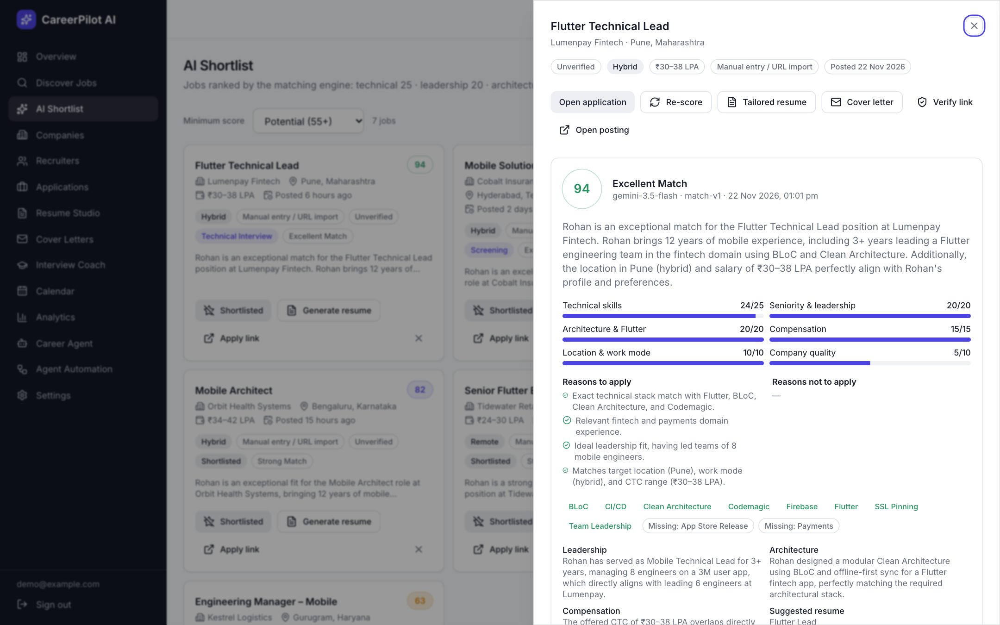
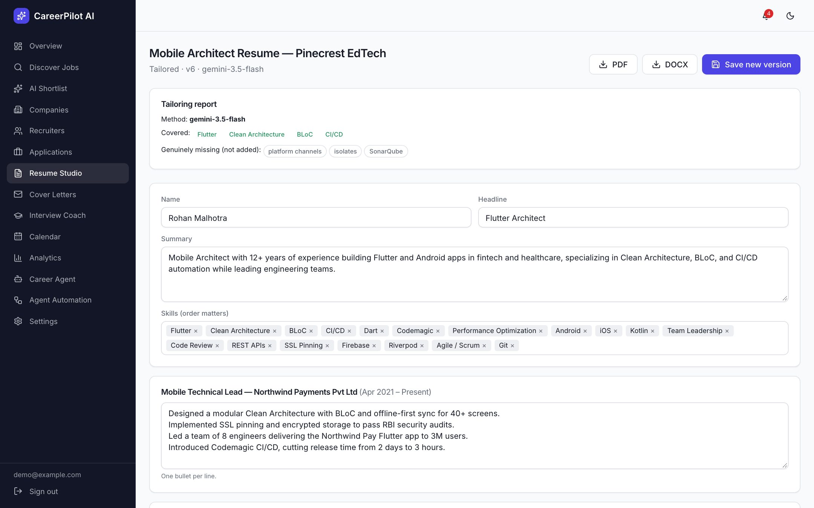
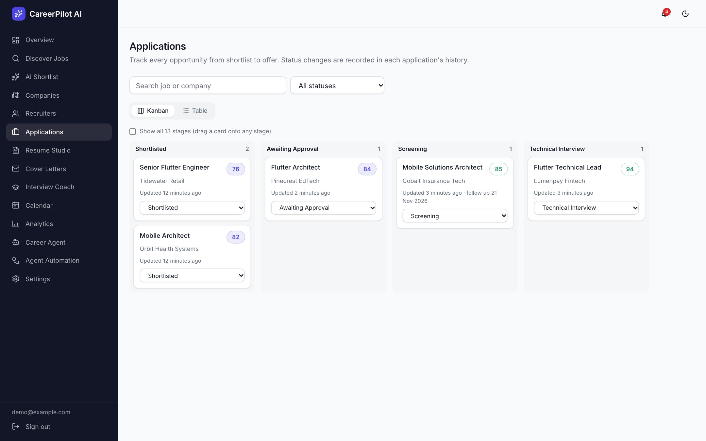
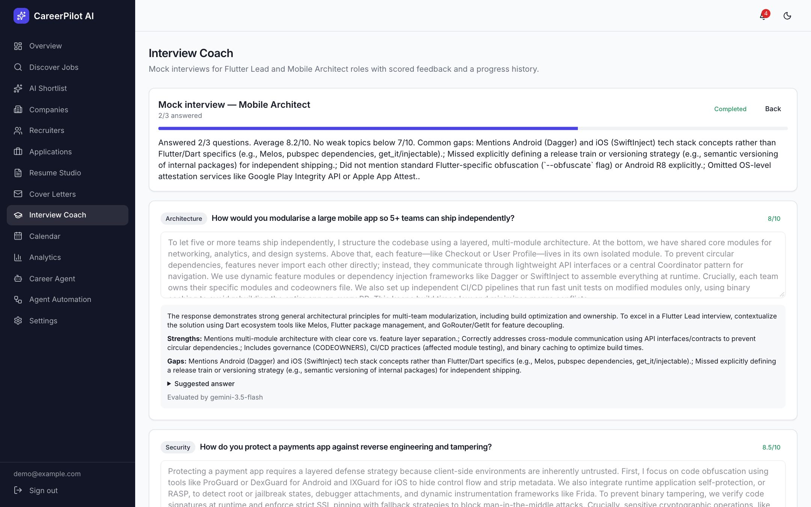
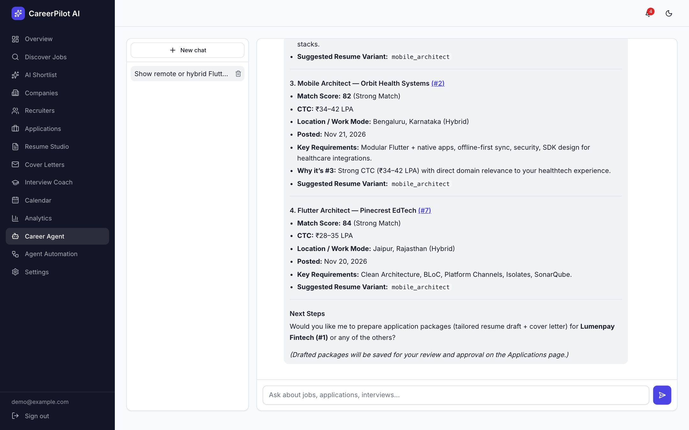
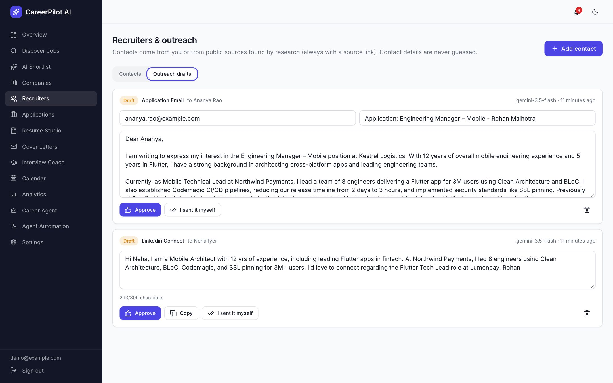
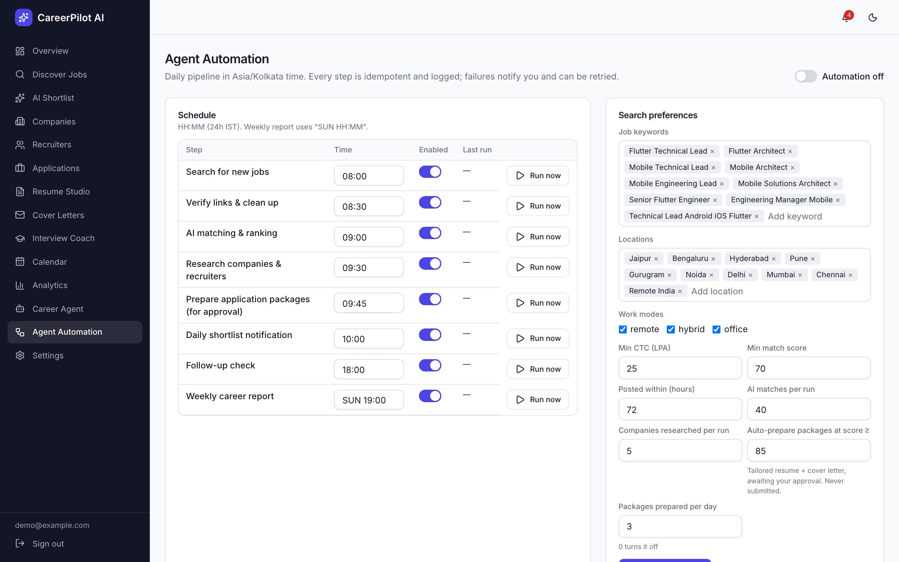
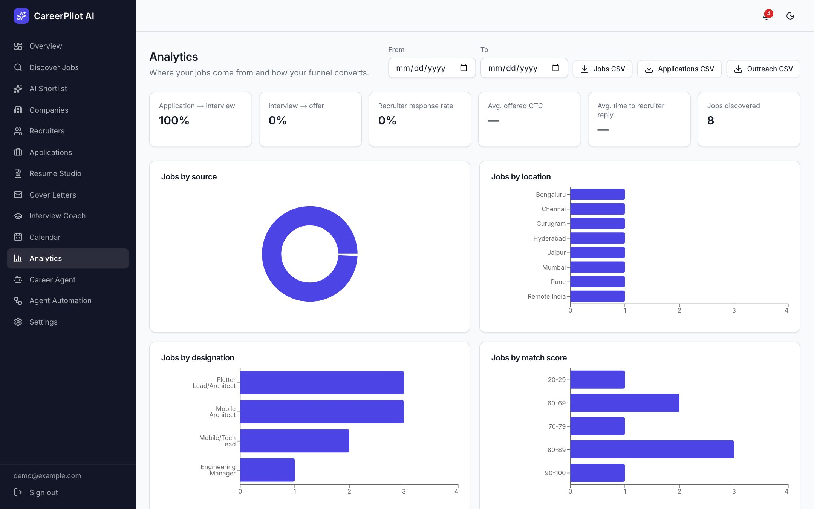

Job discovery
Searches job boards (LinkedIn, Naukri, Indeed and more through a licensed aggregator) and company career pages for your target roles and cities. Paste any posting URL to import it.
A Nous Healthcare product
CareerPilot finds new openings every morning, scores each one against your real experience, prepares a tailored resume and cover letter, and keeps every application, recruiter and interview on track. You stay in control: nothing is sent or submitted without your click.

Everything in one place
Twelve tools that work together, so your job search runs like a well-managed project.
Searches job boards (LinkedIn, Naukri, Indeed and more through a licensed aggregator) and company career pages for your target roles and cities. Paste any posting URL to import it.
Every job gets a 0–100 score: technical skills 25, leadership 20, architecture 20, compensation 15, location 10, company 10, with reasons to apply and reasons not to.
The same role cross-posted on five boards shows up once. Expired links are checked and cleared automatically.
Upload your PDF or Word resume. CareerPilot builds your profile from it and keeps four ready versions: Master, Technical Lead, Architect and Engineering Leadership.
One click turns a job description into an ATS-friendly resume (Word + PDF) and a specific cover letter, built only from your real experience.
Overview, size, tech stack, funding, culture, reviews and risks, from live web search, with every fact linked to its source.
Finds recruiters and hiring managers from public sources, then drafts LinkedIn notes and emails for you to approve. Contact details are never guessed.
Kanban and table views across 13 stages, from Shortlisted to Offer, with a full timeline, follow-up dates and expected versus offered CTC.
Mock interviews on Flutter, architecture, security, Android, iOS, DevOps and leadership, with scored feedback, model answers and progress by topic.
Ask in plain words: "Remote Flutter lead roles above 30 LPA?" or "Which applications need follow-up?" Answers come from your real data.
A morning pipeline searches, scores, researches and prepares packages, then sends your shortlist at 10:00, with follow-up reminders at 18:00.
Jobs by source, city and score, your funnel conversion, recruiter response rate and a weekly report. Export to CSV any time.
How it works
You spend 15–30 minutes a day reviewing, approving and applying. The rest is done for you.
Product tour
Screenshots of the real app, using a fictional demo candidate and demo companies.
The AI Shortlist ranks every opening by fit. Open any job to see exactly why it scored that way: the skills you match, the ones you're missing, salary fit and a recommended next step.

CareerPilot rewrites and reorders your real experience for each job description, then fact-checks the result. A new number or a skill you haven't confirmed is rolled back, and the report shows you exactly what was changed and why.

Drag applications across 13 stages, or switch to a sortable table. Each one keeps its resume version, cover letter, recruiter, interviews, outreach and a full timeline.

Practise with questions written for Flutter Lead and Mobile Architect interviews. Each answer is scored out of 10 with strengths, gaps and a model answer, and your weak topics are tracked over time.

A chat assistant connected to your own jobs, applications and profile. It looks things up, evaluates jobs and prepares drafts, but it has no way to send messages or submit applications.

Keep contacts per company, each with the public source where they were found. Draft personal LinkedIn notes and emails, edit them, approve them, then send. Editing an approved draft sends it back for approval.

Change the schedule, keywords, cities, salary floor and score threshold. Every run is logged with its results; failed steps alert you and can be retried in one click.

See where your best matches come from, how your applications convert to interviews and offers, and how quickly recruiters respond.

Ground rules, built into the code
Everything is built from your resume. Skills you haven't confirmed are left out of matching and documents, and AI edits that add numbers or skills are rolled back automatically.
Applications are never submitted for you. Emails go out only after you approve them, and LinkedIn messages are always sent by you.
Recruiters are saved only with the public page they were found on. An email is kept only if it appears on that page.
No scraping behind logins and no CAPTCHA bypass: licensed APIs, public career pages, and URLs you paste yourself.
Every listing comes from a real source with a link. Duplicates are merged and expired postings are flagged.
Secure sign-in, private document storage, and one-click export or deletion of everything.
Built by Nous Healthcare
The same engineering team that builds Infer Health, an AI-native EMR, built CareerPilot as a complete system, not a demo.
Experienced engineers, especially mobile and engineering leaders in India, who want a focused, well-organised search for senior roles rather than spraying applications.
No. It prepares everything (the tailored resume, the cover letter, the outreach draft) and you review, approve and apply yourself. That keeps every application accurate and in your voice.
LinkedIn, Indeed, Naukri, Foundit and others through a licensed job-search aggregator, plus company career pages and any posting URL you paste.
No. Tailoring only rewords and reorders what is in your profile, and a fact-check rolls back any line that adds a number or a skill you haven't confirmed.
On a private server with encrypted connections. You can export everything or delete your account at any time.
CareerPilot is currently available by invitation. Use the button below and we'll get in touch.
CareerPilot is available by invitation. Tell us about your target role and we'll set you up.
Request access